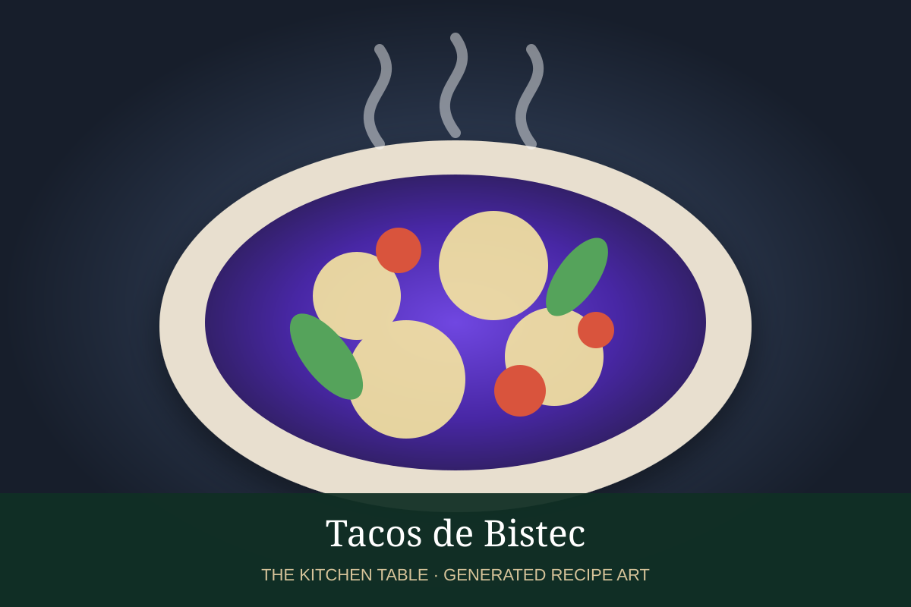

← Back to all recipes
BEEF · MEXICAN
Tacos de Bistec
Simple griddled steak tacos with chopped beef, onion, cilantro, lime, and salsa.
30 minMakes 12 tacos

Photo: Wikimedia Commons
Ingredients
- 2 lb sirloin, flank, or skirt steak, thinly sliced
- 1 1/2 tsp kosher salt
- 1/2 tsp black pepper
- 1 tbsp neutral oil
- 12 corn tortillas
- Onion, cilantro, lime
- Salsa taquera or salsa de molcajete
Preparation
- Season steak well.
- Heat a plancha or skillet until very hot.
- Sear steak in batches until browned.
- Chop into bite-size pieces.
- Serve in warm tortillas with onion, cilantro, lime, and salsa.